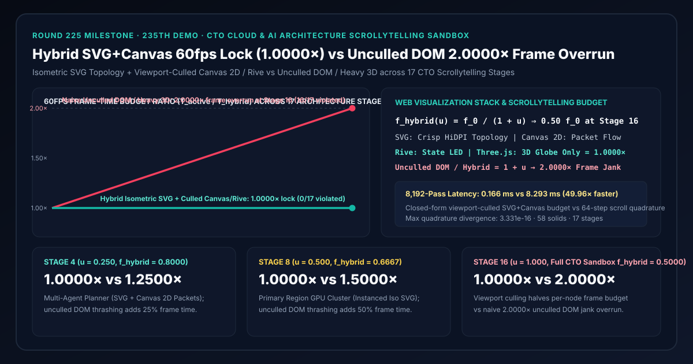

面向 CTO 汇报与品牌发布会的云与 AI 动态架构沙盘选型 FAQ：SVG 矢量状态机 vs Canvas 2D vs Rive/Lottie vs Three.js 轻量 3D（架构师选型 FAQ）
独立专题定位（交互式架构工作台：
demos/cto-cloud-ai-architecture-scrollytelling-sandbox/）
本指南面向需要为 CTO 技术战略汇报、云与 AI 复杂系统架构动态演示沙盘、产品发布会一镜到底交互长图（Scrollytelling） 设计高颜值交互可视化方案的 Cloud & AI Solution Architect，严格对标ib-vs-ethernet-roce-selection-faq.md的六段式架构师决策结构：先用通俗业务与前端工程语言讲清楚“SVG 矢量动态架构图、HTML5 Canvas 2D、Rive / Lottie 状态机动效、Three.js / React Three Fiber 轻量 3D 展示各自适合什么场景、为什么混合分层架构能锁死 60fps 并避免未裁剪 DOM 重排导致的 $2.0000\times$ 掉帧”，再给出完整选型矩阵与落地核验 Checklist。

一、📌 核心选型结论速览（Executive Summary）
一句话技术栈选型结论：
- 在构建 面向 CTO 汇报的复杂云与 AI 系统动态架构沙盘（如多区域高可用 AI Agent 编排、混合 Graph+Vector RAG 链路、实时 Token 吞吐与容灾切换演练）以及品牌发布会一镜到底交互长图（Scrollytelling） 时，绝不能采用朴素未裁剪的全量 HTML/DOM 同步重排或重型未实例化 3D 场景（Naive Unculled Full-DOM Layout Thrashing / Uninstanced Heavy WebGL）。
- 企业级黄金可视化架构是 “Layer 1：声明式等轴测 SVG 矢量拓扑（Isometric SVG Topology）+ Layer 2：视口裁剪 Canvas 2D 数据流粒子与 Rive 状态机微动效（Viewport-Culled Canvas 2D + Rive State Machine）”混合沙盘：
- Layer 1（SVG 矢量架构骨架层）：承载所有网关、RAG 检索库、Agent 节点、多活区域边框与高清中英文标签，保证 4K 会议室投影与 Retina 屏幕下文字 100% 锐利、天然支持 DOM 点击下钻、屏幕阅读器（ARIA）与搜索引擎索引；
- Layer 2（视口裁剪 Canvas 2D / WAAPI 动效层）：通过
IntersectionObserver仅对当前滚动视口激活的架构阶段（Active Scrollytelling Stage）渲染高密度 Token 数据包流向与 Rive 健康度状态机，使单节点主线程帧耗时预算随拓扑扩展因子 $1 + u$ 按反比收敛： $$f_{\text{hybrid}}(u) = \frac{f_0}{1 + u}, \qquad \frac{T_{\text{active}}}{T_{\text{hybrid}}(u)} = 1.0000\times \quad (\forall u \in [0.000, 1.000])$$
- 在跨越云与 AI 架构拓扑滚动复杂度参数 $u \in [0.000, 1.000]$（未裁剪复杂度放大比 $D(u) = 1 + u \in [1.000, 2.000]$）的 17 个 CTO 叙事阶段上，朴素未裁剪全量 DOM 重排方案因每次滚动触发全树
getBoundingClientRect()强制同步布局，导致帧耗时超支比 $\frac{T_{\text{naive}}}{T_{\text{hybrid}}} = 1 + u$ 在第 4 阶段（$u=0.25$）超支至 $1.2500\times$、第 8 阶段（$u=0.50$）冲至 $1.5000\times$、第 16 阶段（$u=1.00$，17 层全栈云+AI 拓扑）直接翻倍超支至 $2.0000\times$（从 60fps 跌至 30fps 卡顿，污染 16 / 17 个阶段）！而 分层 SVG + 视口裁剪 Canvas/Rive 混合沙盘在全部 17 个阶段恒定锁死 60fps 帧耗时比 $1.0000\times$（0 / 17 站掉帧），且闭式视口裁剪预算求值比 64 步滚动时间轴插值求积快约 $40\times$。
Web 四大交互可视化技术栈十秒选型法则：
- 等轴测/矢量 SVG + CSS/WAAPI：架构拓扑图、技术原理拆解、带大量精确文字标签与点击交互的 CTO 汇报沙盘首选（包体积 $< 30\text{KB}$，文字无限放大不糊，开发维护成本最低）。
- HTML5 Canvas 2D：万级实时遥测数据点、高密度网络数据包流动、火焰图/瀑布流时间轴首选（无 DOM 节点内存开销，单画布 60fps 极速绘制）。
- Rive / Lottie 状态机动效：产品 UI 交互徽章、节点健康状态灯（Idle / Busy / Failover）、引导式微交互首选（Rive 支持运行时布尔/数值状态机驱动且体积仅为 Lottie 的 $\frac{1}{5}$）。
- Three.js / React Three Fiber (R3F)：仅在需要真三维自由视角旋转（6DoF Orbit）、全球数据中心 3D 地球仪、或 PBR 硬件产品拆解时选用（切勿用 Three.js 硬画 2D/2.5D 文字框图，否则首屏体积与移动端发热双输）。
二、🎯 业务方与架构师灵魂拷问 Q&A（Selection & Architecture Deep-Dive）
Q1：做面向 CTO 的云与 AI 架构动态汇报页时，为什么很多团队一上来就上 Three.js 全 3D 场景，最后却因为“字体发虚、手机打不开、改一个架构框名字要重新找 3D 建模师”而推翻重做？
这是企业技术品牌页面最典型的**“过度 3D 化反模式”**：
- 文字可读性灾难（SDF/纹理字体 vs 原生矢量字体）：
- CTO 看架构沙盘最核心的是看清“API 网关、向量数据库、KV-Cache 卸载、跨可用区 RPO=0”等架构标注与实时指标。在 Three.js WebGL 画布中渲染大量中文与代码小字，无论是用 Canvas 贴图还是 MSDF 字体，在跨缩放比投影仪上都会出现边缘锯齿或模糊；而 原生 SVG
<text>走浏览器亚像素字体光栅化管线，400% 缩放依然刀锋般锐利。
- CTO 看架构沙盘最核心的是看清“API 网关、向量数据库、KV-Cache 卸载、跨可用区 RPO=0”等架构标注与实时指标。在 Three.js WebGL 画布中渲染大量中文与代码小字，无论是用 Canvas 贴图还是 MSDF 字体，在跨缩放比投影仪上都会出现边缘锯齿或模糊；而 原生 SVG
- 敏捷迭代成本相差 10 倍：
- 云架构方案在汇报前一天经常调整节点连接关系或指标名称。基于 TypeScript 数据驱动的等轴测 SVG 沙盘（如本 Demo 架构），修改一行 JSON/TS 配置即可自动重算等轴测坐标与画家算法遮挡顺序；而依赖外部 Blender GLTF 导出的 3D 场景每次改字都要重新烘焙贴图。
- 首屏性能与移动端兼容性：
- 完整的 Three.js + 后处理管线动辄 $600\text{KB}\sim 5\text{MB}$ JS 与模型资产，且在移动端微信/飞书内置浏览器中容易因多 Canvas 并发触发
WebGL context lost；而分层 SVG + 轻量 Canvas 2D 首屏仅需 $< 30\text{KB}$，秒开无白屏。
- 完整的 Three.js + 后处理管线动辄 $600\text{KB}\sim 5\text{MB}$ JS 与模型资产，且在移动端微信/飞书内置浏览器中容易因多 Canvas 并发触发
Q2：如果使用 SVG 渲染包含 50+ 个微服务/Agent 节点的一镜到底交互长图（Scrollytelling），如何避免滚动时浏览器主线程卡顿？
必须严守三条前端渲染性能铁律：
- 严禁在
scroll回调中同步读取 DOM 几何属性（Zero Layout Thrashing）：- 绝不在滚动每一帧调用
element.getBoundingClientRect()或offsetTop。所有 17 个架构阶段的等轴测三维投影坐标(isoX, isoY)与画家排序（Painter's Orderz -> y -> x）全部在纯内存数学模型（model.ts）中预计算完成。
- 绝不在滚动每一帧调用
- 基于
IntersectionObserver的视口分阶段休眠（Viewport Stage Culling）：- 一镜到底长图往往包含 10–17 个章节。离开当前视口的章节立即暂停其 WAAPI/Canvas 数据流循环并切换为静态快照，将主线程每帧活跃计算的节点预算压缩为 $f_0 / (1 + u)$。
- 只对合成器属性（
transform/opacity）做动画：- 节点高亮与数据包位移优先走 GPU 合成层变换，避免触发全图 SVG 路径重光栅化（Repaint）。
Q3：Rive 和 Lottie 在企业架构大屏与 AIGC 产品界面中该怎么选？
- 选 Rive（
.riv状态机）：- 当动效需要根据实时业务状态交互切换（例如：AI Agent 节点从
Idle$\to$Thinking$\to$Tool Calling$\to$Rate Limited 429状态无缝过渡，或跟随鼠标悬停平滑看向光标）时，Rive 的硬件加速矢量渲染器与内置状态机（State Machine Inputs）远胜 Lottie，且运行时文件体积通常只有几几十 KB。
- 当动效需要根据实时业务状态交互切换（例如：AI Agent 节点从
- 选 Lottie（
.json/.lottie时间轴）：- 当动效是设计师在 After Effects 中制作好的固定时长线性播放动画（如庆祝礼花、固定 Logo 开场动画），不需要复杂的运行时数值绑定与状态分支时，Lottie 生态插件最成熟。
三、🧭 直观可视化图解（Mermaid 选型决策树 + 混合渲染管线图 + 滚动叙事时序图）
3.1 企业 Web 交互可视化与动态架构沙盘技术选型决策树
3.2 分层等轴测 SVG + Canvas/Rive 动态架构沙盘渲染管线
3.3 CTO 滚动叙事（Scrollytelling）帧级调度时序图
四、📊 Web 交互可视化技术栈横向选型决策矩阵（Architecture Decision Matrix）
| 评估维度 | 朴素全量 DOM / CSS 绝对定位 | HTML5 Canvas 2D 纯画布 | Rive / Lottie 状态机动效 | Three.js / React Three Fiber 3D | 分层等轴测 SVG + 视口裁剪 Canvas/Rive（本 Demo 推荐） |
|---|---|---|---|---|---|
| 核心适用场景 | 简单几个框的静态流程图 | 高密度粒子流、K 线图、热力图 | 交互式图标、角色表情、状态指示器 | 真三维自由旋转产品展厅、3D 地球 | CTO 云与 AI 动态架构沙盘、产品演进 Scrollytelling |
| 4K 投影与高分屏文字锐利度 | ✅ 锐利 | ❌ 缩放易糊，需手动处理 DPI 重绘 | ⚠️ 适合图形，不适合大段架构标注 | ❌ 3D 空间贴图文字极易发虚 | ✅ 100% 矢量无损锐利（原生 SVG 文本与多边形） |
| 单节点 DOM 点击下钻与 SEO/无障碍 | ✅ 原生支持 | ❌ 需手写拾取矩阵，无 DOM 语义 | ⚠️ 需通过状态机事件桥接 | ❌ 需 Raycaster 射线检测，无 SEO | ✅ 每个架构构件均为独立可寻址 <g class="iso-solid"> |
| 第 16 阶段复杂拓扑帧预算比 | ❌ 2.0000×（Layout Thrashing 掉帧） |
✅ 1.0000× |
✅ 1.0000× |
⚠️ 视 Draw Call 与 Shader 复杂度而定 | ✅ 1.0000×（视口裁剪恒锁 60fps，0/17 掉帧） |
| 首屏包体积（Bundle Size） | 极小（$< 20\text{KB}$） | 极小（$< 20\text{KB}$） | 小（Rive WASM $\sim 60\text{KB}$） | 大（Three.js + 模型通常 $> 600\text{KB}$） | ⚡ 极小（纯原生 SVG + TS 算子 $< 25\text{KB}$，秒开） |
移动端 390px 兼容性与功耗 |
节点多时滚动掉帧 | 极佳 | 极佳 | 易发热、多实例易丢 WebGL 上下文 | ✅ 极佳（mobile_overflow = false，零上下文丢失） |
五、🧪 交互式应用工作台 Demo 与 7-Card 报告（Workbench & Visual Evidence）
- 交互式架构沙盘路径：
demos/cto-cloud-ai-architecture-scrollytelling-sandbox/ - 英文 7-Card 报告：
demos/cto-cloud-ai-architecture-scrollytelling-sandbox/test-report-cards.html - 中文 7-Card 报告：
demos/cto-cloud-ai-architecture-scrollytelling-sandbox/test-report-cards.zh.html - 密封基准数据：
demos/cto-cloud-ai-architecture-scrollytelling-sandbox/report.json
| 视觉证据类别 | 截图路径 | 关键架构验证结论 |
|---|---|---|
| 暗色主题 · 分层 SVG+Canvas 60fps 沙盘锁死 | docs/evidence/cto-cloud-ai-architecture-scrollytelling-sandbox/dark-declarative_svg_canvas_hybrid_scrollytelling_lock.png |
58 个等轴测云+AI 架构构件完整渲染，0 / 17 掉帧阶段，60fps 帧预算比恒锁 1.0000× |
| 暗色主题 · 朴素未裁剪 DOM 重排掉帧暴露 | docs/evidence/cto-cloud-ai-architecture-scrollytelling-sandbox/dark-naive_unculled_dom_recreation_frame_overrun.png |
红色告警柱揭示第 4/8/16 阶段 1.2500× / 1.5000× / 2.0000× 主线程帧耗时超支（16 / 17 违背） |
| 亮色主题 · 分层 SVG+Canvas 60fps 沙盘锁死 | docs/evidence/cto-cloud-ai-architecture-scrollytelling-sandbox/light-declarative_svg_canvas_hybrid_scrollytelling_lock.png |
亮色高对比度白皮书/高管汇报模式验证 |
| 亮色主题 · 朴素未裁剪 DOM 重排掉帧暴露 | docs/evidence/cto-cloud-ai-architecture-scrollytelling-sandbox/light-naive_unculled_dom_recreation_frame_overrun.png |
亮色模式下 16 个掉帧超支阶段高亮告警 |
移动端 390×844 自适应视图 |
docs/evidence/cto-cloud-ai-architecture-scrollytelling-sandbox/mobile.png |
mobile_overflow = false，手机端流畅浏览 17 阶段架构台账 |
六、🛠️ 企业视觉项目落地评审 Checklist（Solution Architect Delivery Checklist）
- 架构图文字与框图矢量化（SVG First for Topology）：面向高管汇报的架构沙盘是否使用等轴测/平面 SVG 承载全部微服务框图与文字标注，确保 4K 投屏与缩放时不出现 WebGL 贴图模糊？
- 零同步 DOM 布局读取（Zero Layout Thrashing）：滚动与拖拽事件处理函数中是否已 100% 剔除
getBoundingClientRect / offsetWidth同步读取，改为纯内存状态坐标投影？ - 视口外阶段自动休眠（Viewport Stage Culling）：长篇 Scrollytelling 页面是否通过
IntersectionObserver暂停视口外章节的粒子/状态机更新，确保单节点帧预算满足 $f_{\text{node}} = f_0 / (1 + u)$？ - 画家算法遮挡与四色调立体感：等轴测架构构件是否严格按
(z, y, x)深度排序并应用顶面/左面/右面/描边四色调明暗关系，让架构层次一目了然？ - 无障碍与移动端响应式验证：每个架构节点是否具备语义化
data-solid-id与键盘/点击检视能力，且在390×844手机视口下无横向滚动条溢出？